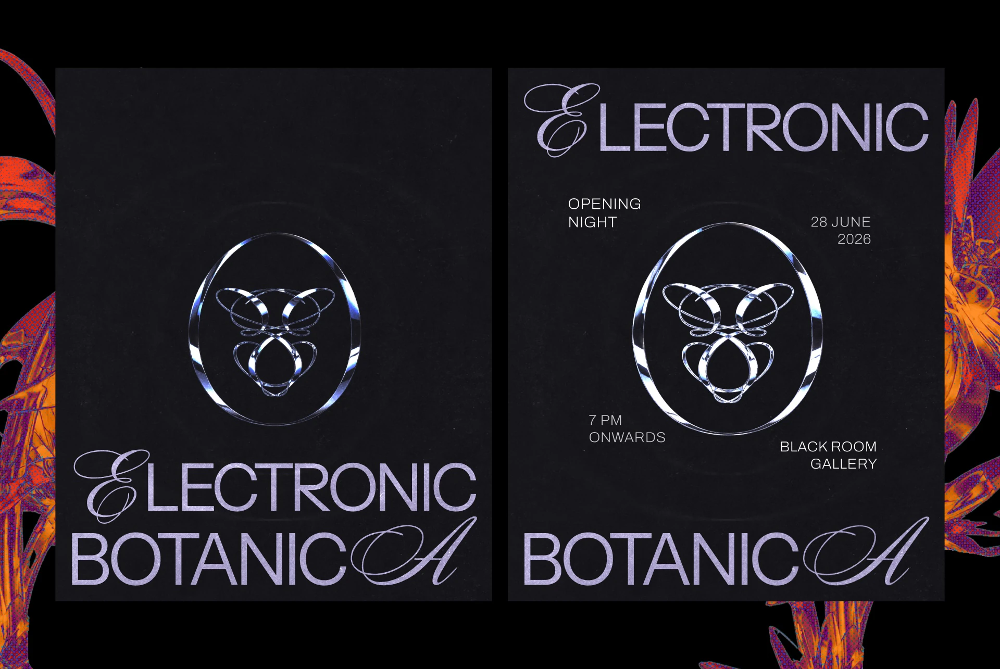

I’m Raheem Animashaun.
I make identities and digital work
that move with an idea.
Contact me
animashaunraheem05@gmail.com
/ WORKS
Clear ideas.
Distinct outcomes.
FlipView case study
A crypto exchange experience as simple as flipping a coin.
View all work


Electronic BotanicaView case study A generative art exhibition exploring the collision between organic forms and digital systems. Project 03PlaceholderArt Direction — artwork to come. Project 04PlaceholderPackaging — artwork to come. Project 05PlaceholderCampaign Design — artwork to come. Project 06PlaceholderDigital Expression — artwork to come.
/ ABOUT RAHEEM
I’m Raheem Animashaun, an independent designer and creative developer. I make brand identities, digital experiences, and motion with a curiosity for how things look, move, and feel. I collect visual references, question the obvious answer, and keep shaping each idea until it feels distinct, useful, and human.
More about me
Independent designer / Working worldwide
/ What I shape
I design ideas into brands people remember.
My work spans, but is never limited to, the following:
See my work